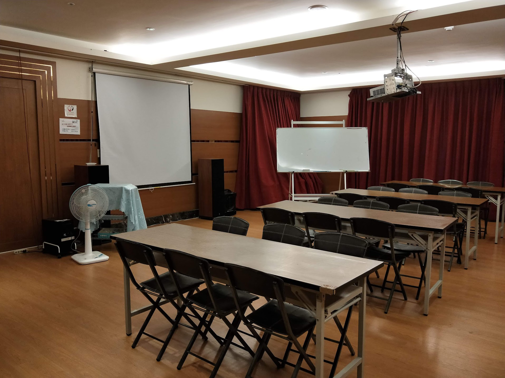
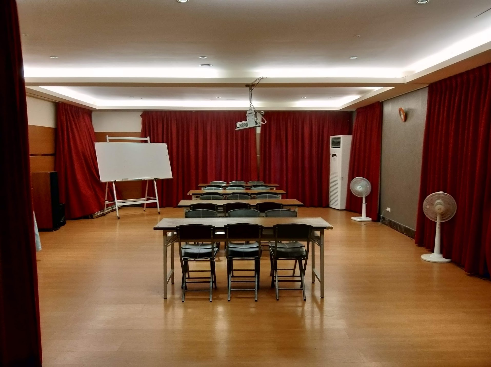

新北市婦女服務中心會議室租借須知
 申請人於獲准租用時，應於一周前請以現金先行繳付百分之五十之訂金，餘數於活動辦理當日繳清，並同時索取收據。
申請人於獲准租用時，應於一周前請以現金先行繳付百分之五十之訂金，餘數於活動辦理當日繳清，並同時索取收據。
本中心全面禁煙、嚴禁亂吐檳榔汁、喧譁、叫囂、鬥毆及攜帶寵物入內(導盲犬除外)及等情事發生，申請人應通知與會人員，並予適當約束。
活動舉行期間，不提供茶水、紙杯，請借用單位自備，未經許可不得在會議室用餐。
場地使用費依下列場次計算；每場次以三小時計，未滿三小時以三小時計算：
上午場次：九時至十二時
下午場次：十四時至十七時 全日: 九時至十七時
其他相關事宜 請詳閱租借申請書